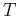
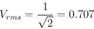

Next: About this document ...
Up: averagevalue
Previous: Average Value of Sinusoids
The effective value of a time-varying current or voltage is the
constant value of current or voltage that in period
 would transfer the same amount of energy:
i.e.,
As or is the ``square root of the mean of the squared value'',
it is also called the root-mean-square (rms) current or voltage.
For a sinusoidal variable
, we have
(Recall trigonometric identity:
.)
Similarly, we also have

Ruye Wang
2016-01-17